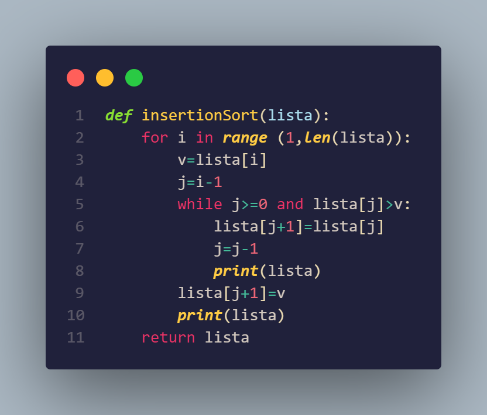

Ordenamiento por Inserción
Acerca de:
El ordenamiento por inserción es un algoritmo utilizado para ordenar elementos en una lista. Funciona dividiendo la lista en dos partes: una parte ordenada y una parte desordenada. En cada paso, se toma un elemento de la parte desordenada y se inserta en la posición correcta dentro de la parte ordenada, desplazando los elementos mayores si es necesario. Este proceso se repite hasta que la lista esté completamente ordenada.
Autor y año de creación:
El ordenamiento por inserción ha sido utilizado durante mucho tiempo en la historia de la programación y no tiene un autor específico atribuido a su creación. Es un algoritmo básico y ampliamente conocido.
Duración:
La duración del ordenamiento por inserción tiene una complejidad temporal de O(n2), donde "n" representa el número de elementos en la lista. En el peor caso, donde la lista está completamente desordenada, se realizarán aproximadamente n2/2 comparaciones e intercambios. Sin embargo, en el mejor caso, donde la lista ya está ordenada, el algoritmo puede tener una complejidad de O(n), ya que solo se realizarán comparaciones para verificar que los elementos estén en orden. La duración también puede variar según la implementación específica del algoritmo.
Eficiencia:
El ordenamiento por inserción es eficiente para listas pequeñas o casi ordenadas. Aunque tiene una complejidad cuadrática, su eficiencia es mejor que otros algoritmos de ordenamiento cuadráticos como el ordenamiento de burbuja o el ordenamiento por selección. Es fácil de entender e implementar, y puede ser útil cuando se trabaja con listas pequeñas o cuando se espera que la lista esté parcialmente ordenada.
